Note
Go to the end to download the full example code
Primitives#
此示例显示用于创建 volume 的不同命令，例如块、圆柱体等。
from ansys.mapdl.core import launch_mapdl
# start MAPDL and enter the pre-processing routine
mapdl = launch_mapdl()
mapdl.clear()
mapdl.prep7()
print(mapdl)
Product: Ansys Mechanical Enterprise
MAPDL Version: 23.1
ansys.mapdl Version: 0.67.0
APDL Command: BLC4#
通过角点创建矩形 area 或长方体 volume 。
从 (0.25, 0.25) 开始创建一个 (0.5 x 0.5) 矩形
mapdl.clear()
mapdl.prep7()
anum1 = mapdl.blc4(0.25, 0.25, 0.5, 0.5)
mapdl.aplot(show_lines=True, line_width=5, show_bounds=True, cpos="xy")
创建一个尺寸为 (1 x 4 x 9) 的 volume， volume 的一角位于当前工作平面的 (0, 0) 。
该方法返回 volume 编号。
mapdl.clear()
mapdl.prep7()
vnum = mapdl.blc4(width=1, height=4, depth=9)
mapdl.vplot(show_lines=True)
- 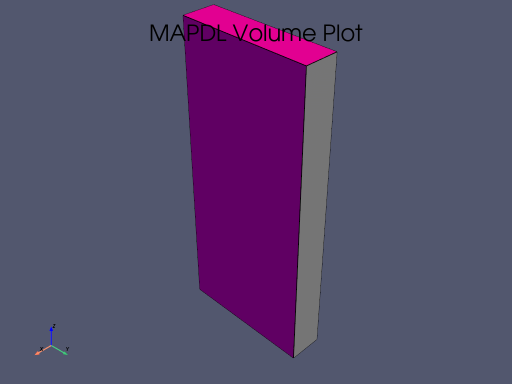
- 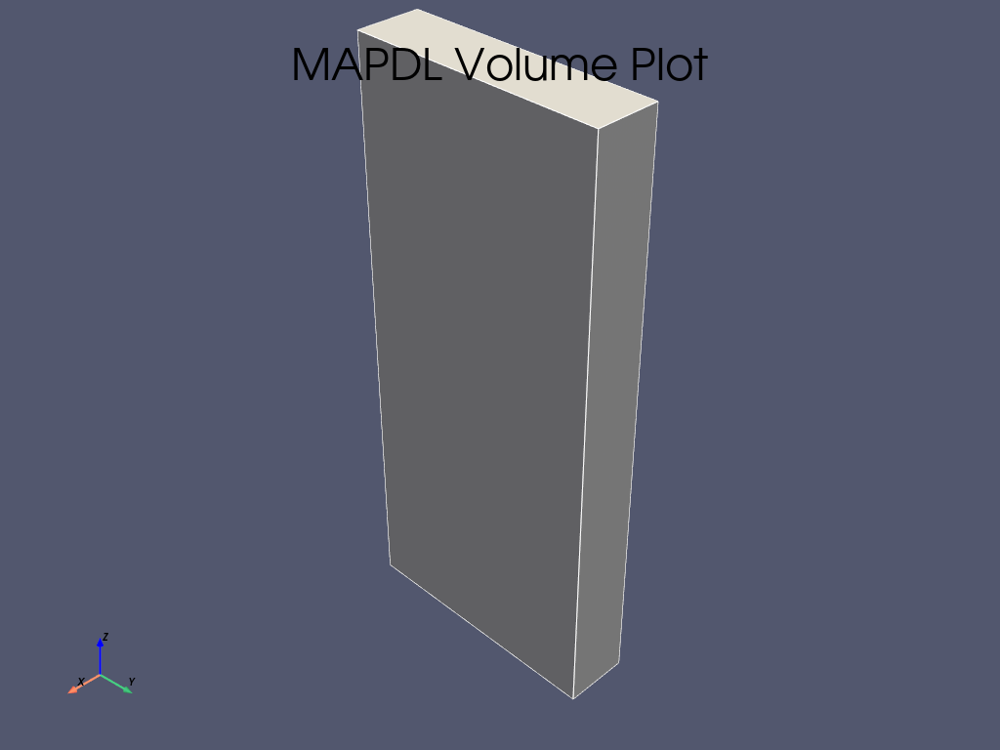
APDL Command: BLC5#
通过中心点和角点创建矩形 area 或块 volume。
这与 BLC4 不同，因为它描述的是中心点而不是角点。
创建一个以 (0, 0) 为中心、宽 0.5、高 0.5 的正方形。
mapdl.clear()
mapdl.prep7()
anum1 = mapdl.blc5(width=0.5, height=0.5)
mapdl.aplot(show_lines=True, line_width=5, show_bounds=True, cpos="xy")
创建一个尺寸为 1 x 4 x 9 的图块，其顶点位于当前工作平面的 (0, 0) 。
该方法返回 volume 编号。
mapdl.clear()
mapdl.prep7()
vnum = mapdl.blc5(width=1, height=4, depth=9)
mapdl.vplot(show_lines=True, show_bounds=True)
- 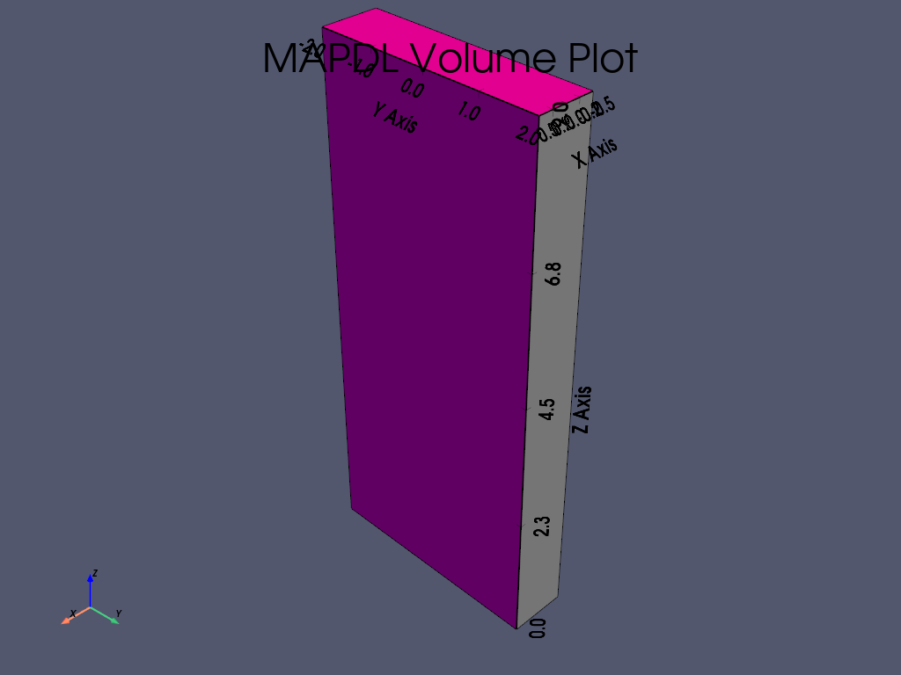
- 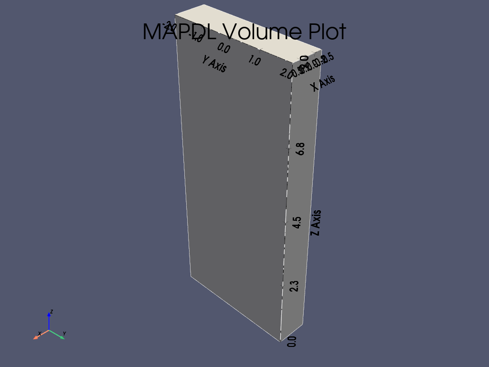
APDL Command: BLOCK#
根据工作平面坐标创建大小为 (1 x 2 x 3) 的图块 volume
mapdl.clear()
mapdl.prep7()
vnum = mapdl.block(0, 1, 0, 2, 1, 4)
mapdl.vplot(
show_lines=False,
show_bounds=True,
color=(0.5, 0.5, 0.5),
background=(0.8, 0.8, 0.8),
)
- 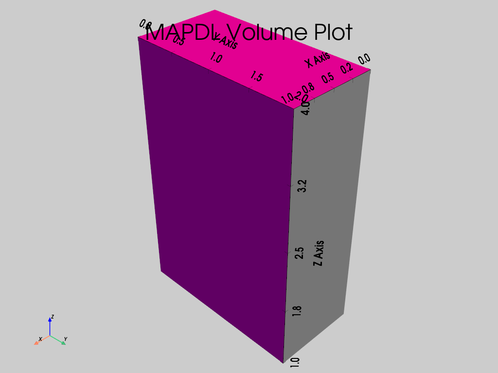
- 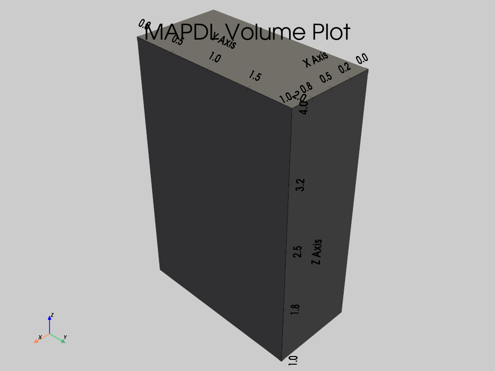
APDL Command: CON4#
在工作平面的任意位置创建锥形 volume。
创建一个底部半径为 3、高为 10 的圆锥体。
mapdl.clear()
mapdl.prep7()
vnum = mapdl.con4(rad1=3, rad2=0, depth=10)
mapdl.vplot(show_lines=False, quality=6, show_bounds=True)
- 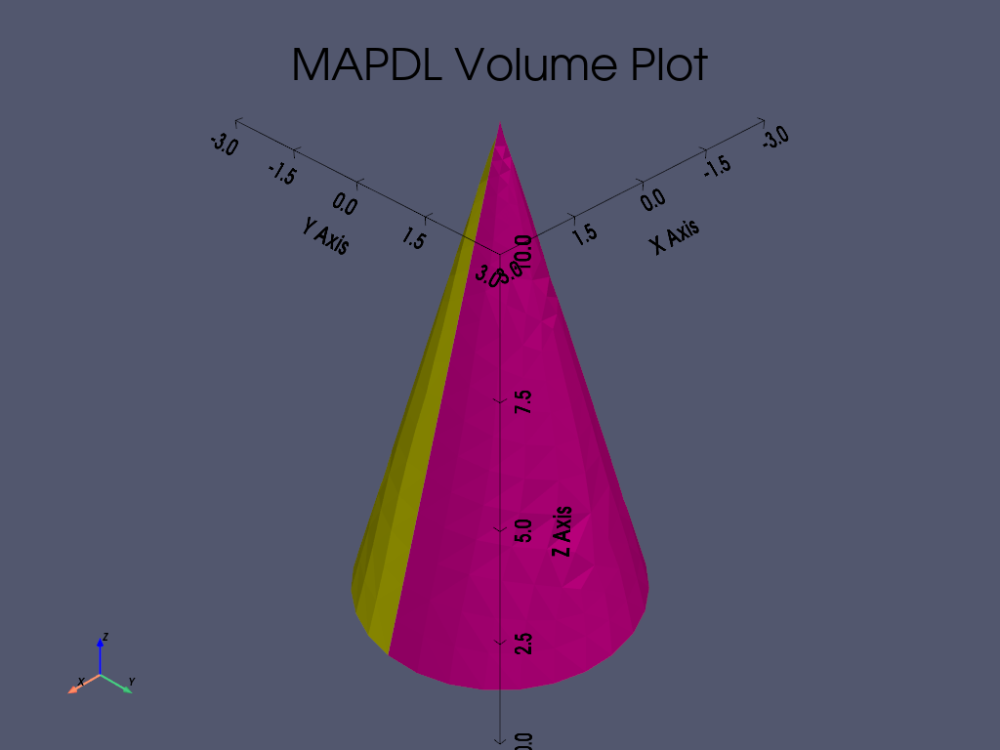
- 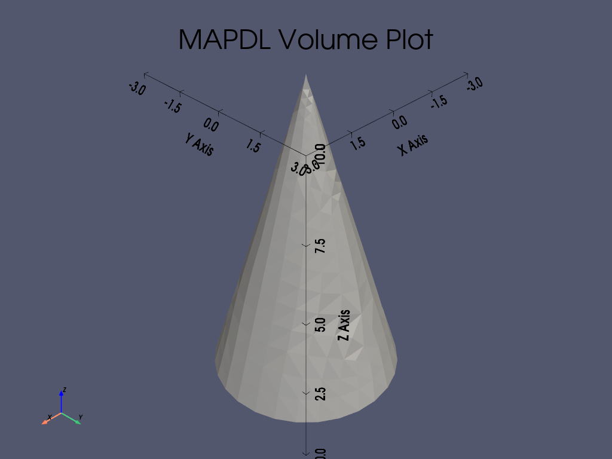
APDL Command: CONE#
以工作平面原点为中心，创建一个锥形 volume。（CONE – conical /’kɑnɪkl/)
以 (0, 0) 为中心，创建一个底部半径为 3、顶部半径为 1、高度为 10 的四分之一圆锥。
mapdl.clear()
mapdl.prep7()
vnum = mapdl.cone(rbot=5, rtop=1, z1=0, z2=10, theta1=180, theta2=90)
mapdl.vplot(show_lines=False, quality=6, show_bounds=True)
- 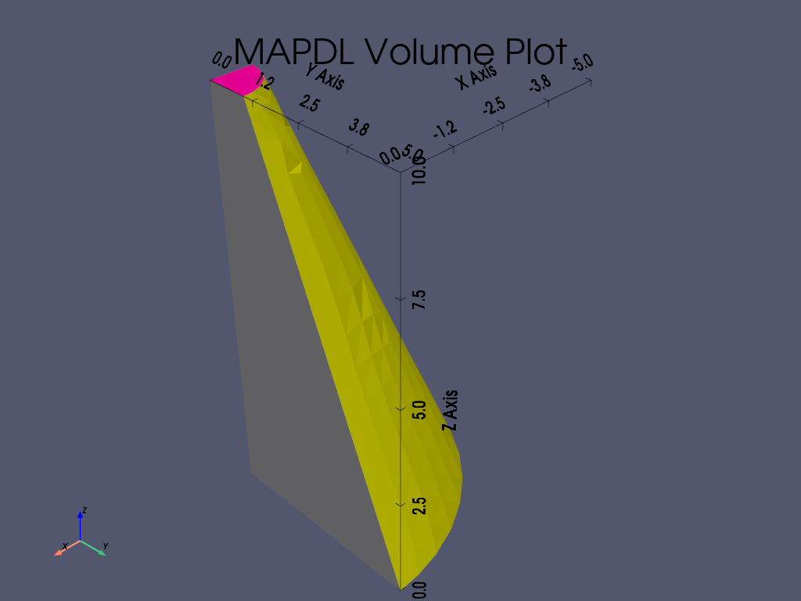
- 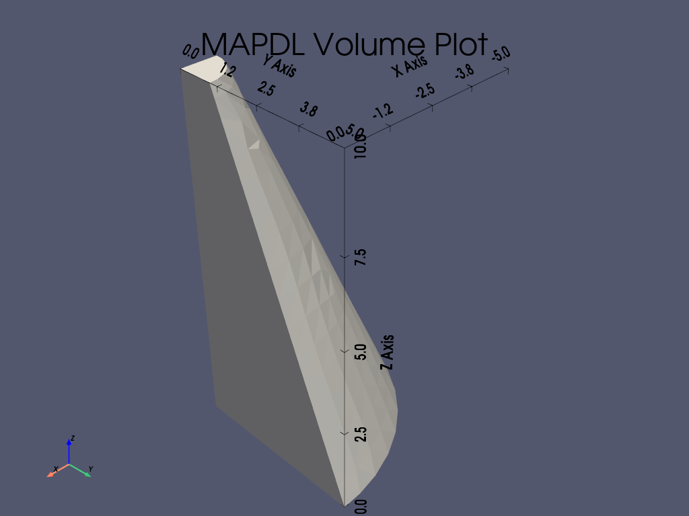
APDL Command: CYL4#
在工作平面的任意位置创建圆形 area 或圆柱形 volume。（cylinder /ˈsɜːrkjələr/）
以原点为中心，创建一条外半径为 2、内半径为 1 的半弧。
注意关键字参数 depth 是未设置的，这将生成 area 而不是 volume 。将深度设置为大于 0 的值将生成 volume。
mapdl.clear()
mapdl.prep7()
anum = mapdl.cyl4(xcenter=0, ycenter=0, rad1=1, theta1=0, rad2=2, theta2=180)
mapdl.aplot(show_lines=True, line_width=5, show_bounds=True, cpos="xy")
以原点为中心创建一个体积半弧，外半径为 2，内半径为 1，厚度为 0.55。
mapdl.clear()
mapdl.prep7()
anum = mapdl.cyl4(
xcenter=0, ycenter=0, rad1=1, theta1=0, rad2=2, theta2=180, depth=0.55
)
mapdl.vplot(show_bounds=True)
- 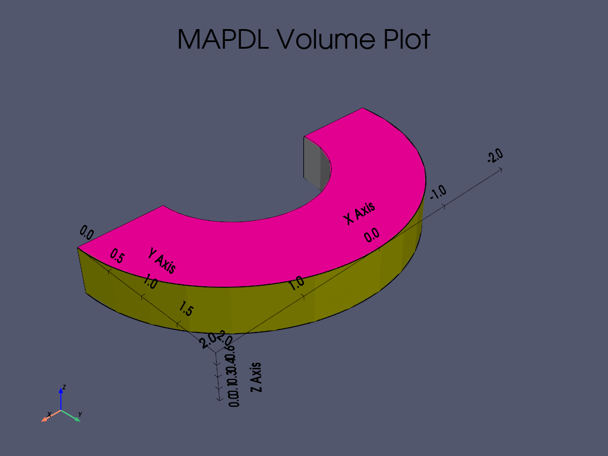
- 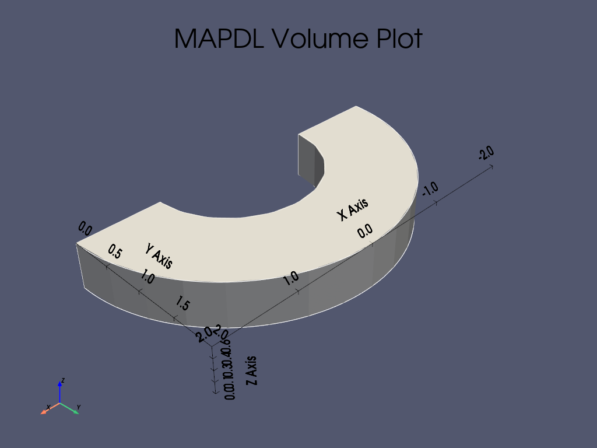
APDL Command: CYL5#
通过端点创建圆形 area 或圆柱形 volume。
创建一个圆，圆的一点位于 (1, 1) ，另一点位于 (2, 2) 。
mapdl.clear()
mapdl.prep7()
anum = mapdl.cyl5(xedge1=1, yedge1=1, xedge2=2, yedge2=2)
mapdl.aplot(show_lines=True, line_width=5, show_bounds=True, cpos="xy")
创建一个圆柱体，圆的一点位于 (X, Y) == (1, 1) ，另一点位于 (X, Y) == (2, 2) ，高为 3。
mapdl.clear()
mapdl.prep7()
vnum = mapdl.cyl5(xedge1=1, yedge1=1, xedge2=2, yedge2=2, depth=5)
mapdl.vplot(show_lines=False, quality=6, show_bounds=True)
- 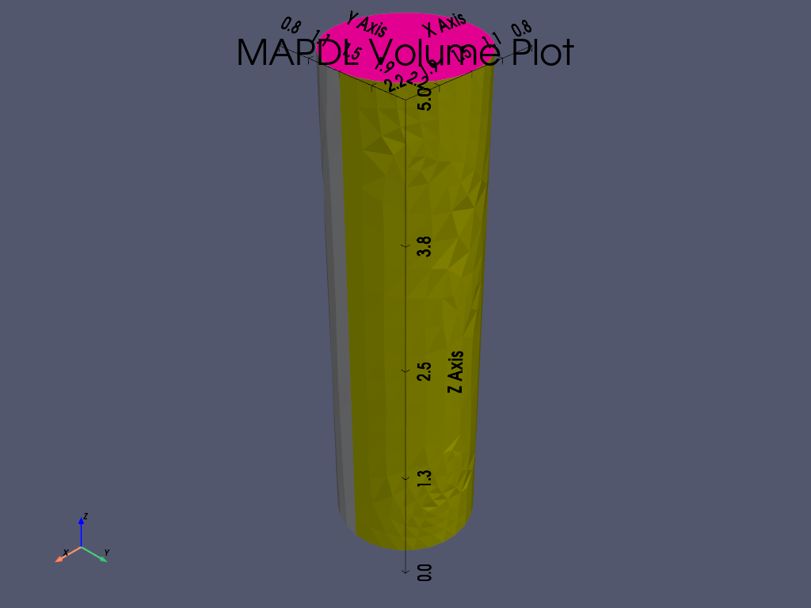
- 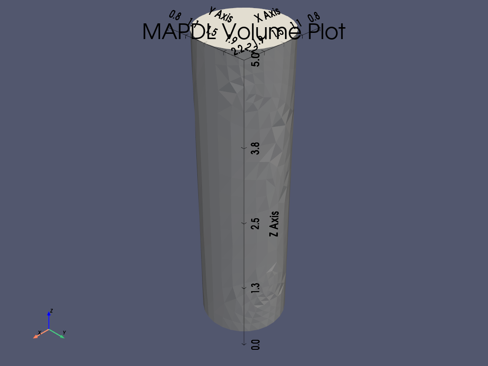
APDL Command: CYLIND#
创建一个以工作平面原点为中心的圆柱 volume。
创建一个内半径为 0.9、外半径为 1.0、高为 5 的空心圆柱体
mapdl.clear()
mapdl.prep7()
vnum = mapdl.cylind(0.9, 1, z1=0, z2=5)
mapdl.vplot(show_lines=False, quality=4, show_bounds=True)
- 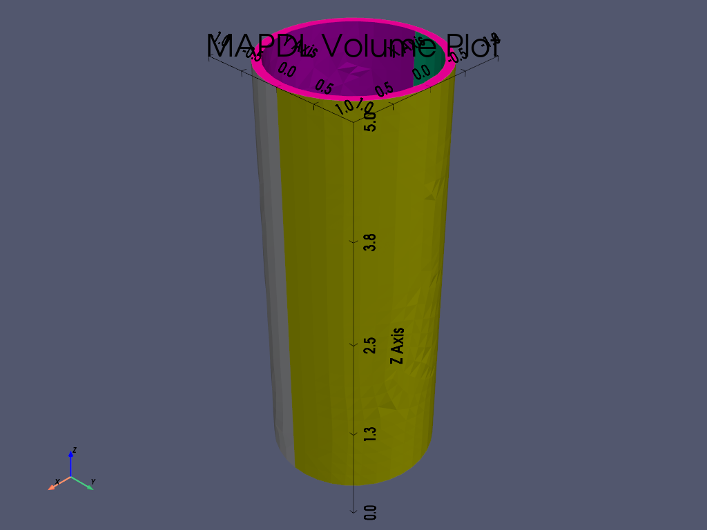
- 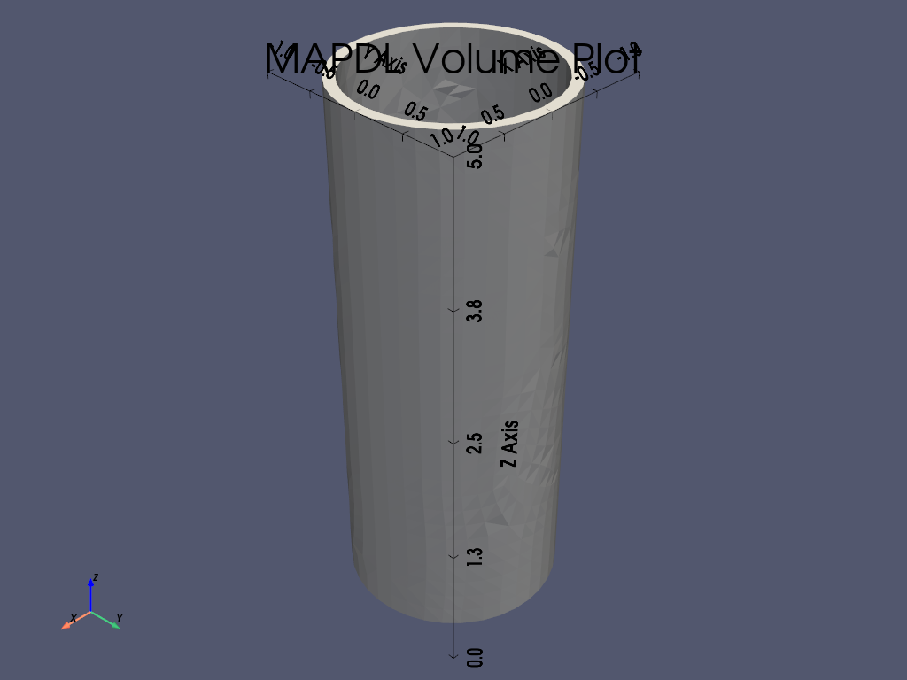
APDL Command: PCIRC#
创建一个以工作平面原点为中心的圆形区域。
在本例中，创建了一个内半径为 0.95、外半径为 1 的圆形 area 。
mapdl.clear()
mapdl.prep7()
anum = mapdl.pcirc(0.95, 1)
mapdl.aplot(show_bounds=True)
APDL Command: RECTNG#
在工作平面的任意位置创建一个矩形 area。 (rectangular /rek’tæŋgjʊlə/)
在此示例中，创建了一个矩形，该矩形的一个角位于 (0.5, 0.5) ，另一个角位于 (1.5, 2.5) 。
mapdl.clear()
mapdl.prep7()
anum = mapdl.rectng(0.5, 1.5, 0.5, 2.5)
mapdl.aplot(show_bounds=True)
APDL Command: SPH4#
在工作平面的任意位置创建球形体。 (spherical /ˈsferɪkl/)
本例创建了一个空心球体，以 (0, 0) 为中心，内半径为 0.9，外半径为 1.0。
mapdl.clear()
mapdl.prep7()
vnum = mapdl.sph4(0, 0, rad1=0.9, rad2=1.0)
mapdl.vplot(show_lines=False, show_bounds=True, smooth_shading=True)
- 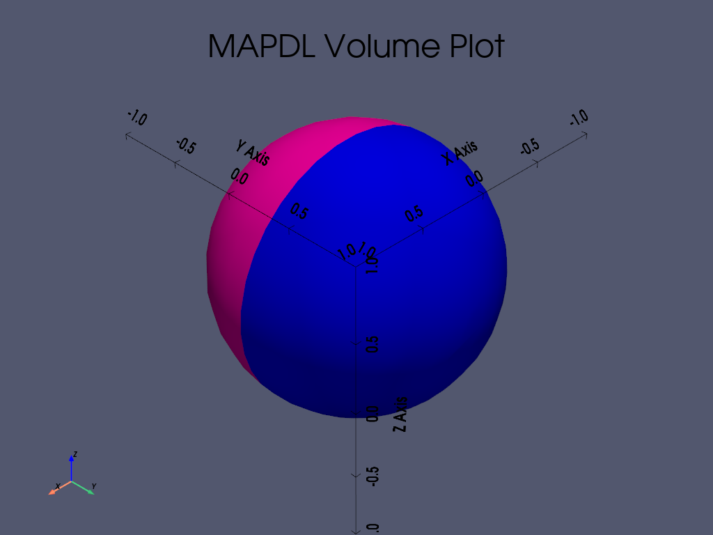
- 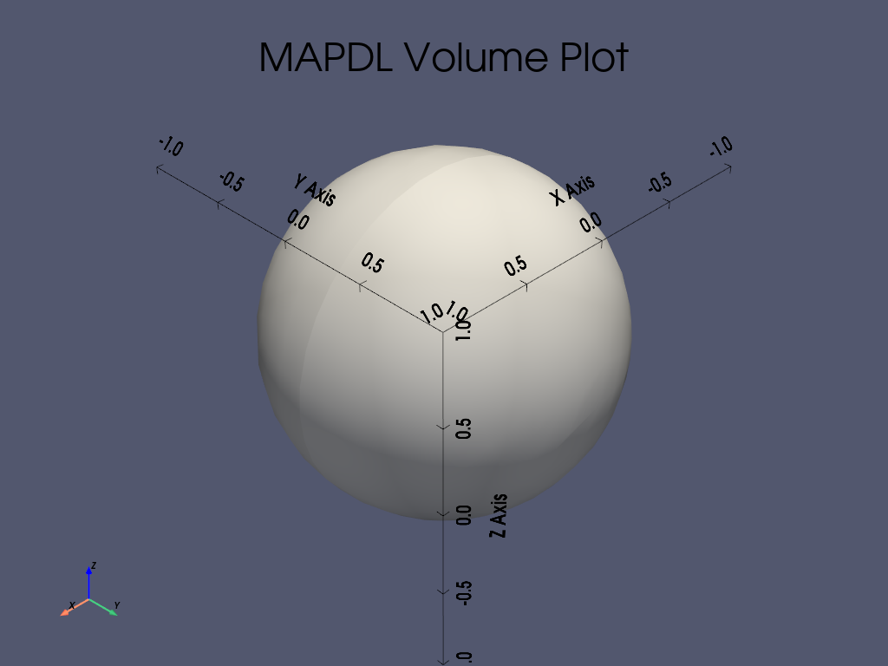
APDL Command: SPHERE#
在工作平面的任意位置创建球形体。
本例创建了一个半空心球体，内半径为 0.9，外半径为 1.0。
mapdl.clear()
mapdl.prep7()
vnum = mapdl.sphere(rad1=0.95, rad2=1.0, theta1=90, theta2=270)
mapdl.vplot(show_lines=False, quality=4, show_bounds=True)
- 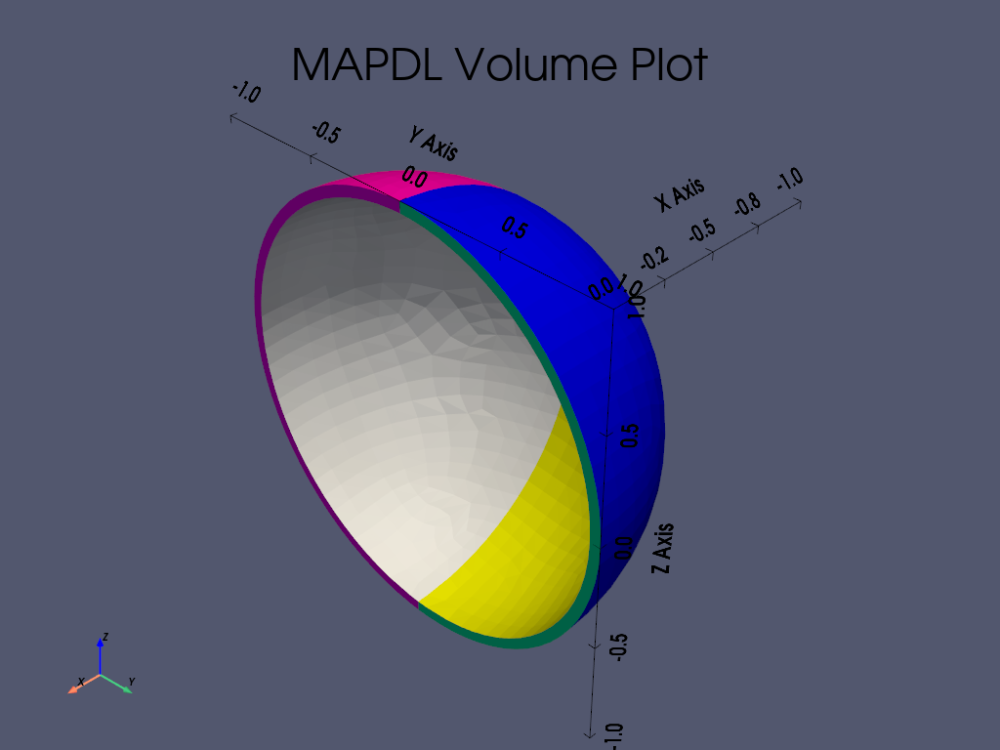
- 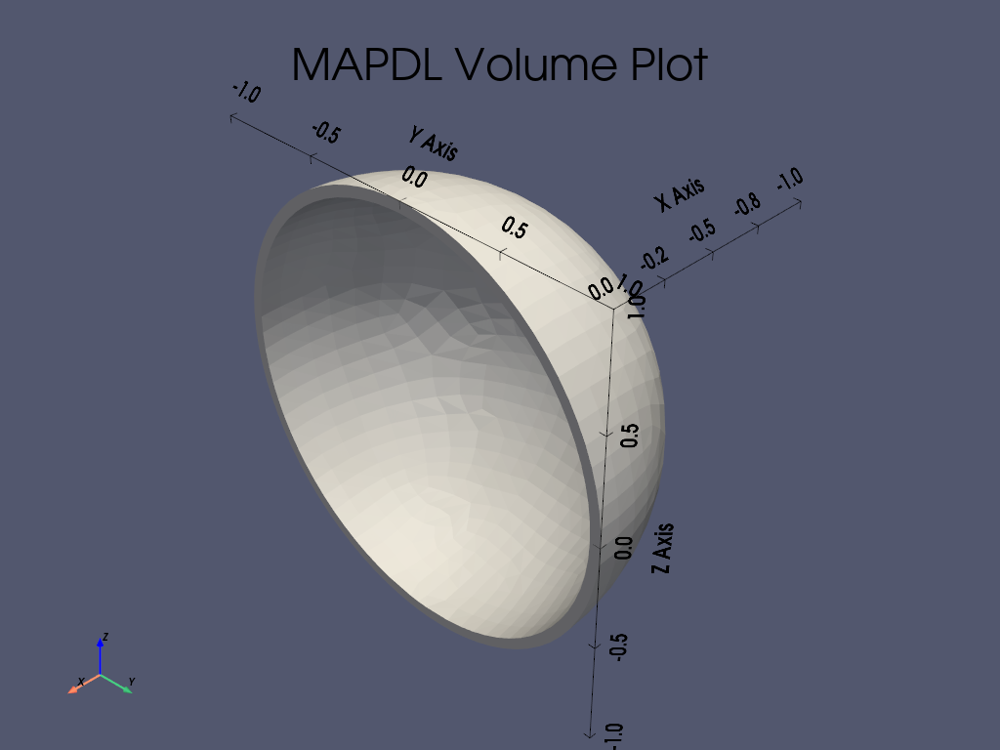
APDL Command: SPH5#
在工作平面的任意位置创建球形体。
该示例创建了一个球体，其中一个点位于 (1, 1) ，另一个点位于 (2, 2) 。
mapdl.clear()
mapdl.prep7()
vnum = mapdl.sph5(xedge1=1, yedge1=1, xedge2=2, yedge2=2)
mapdl.vplot(show_lines=False, show_bounds=True, smooth_shading=True)
- 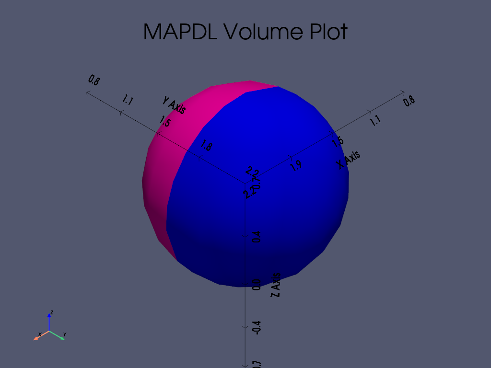
- 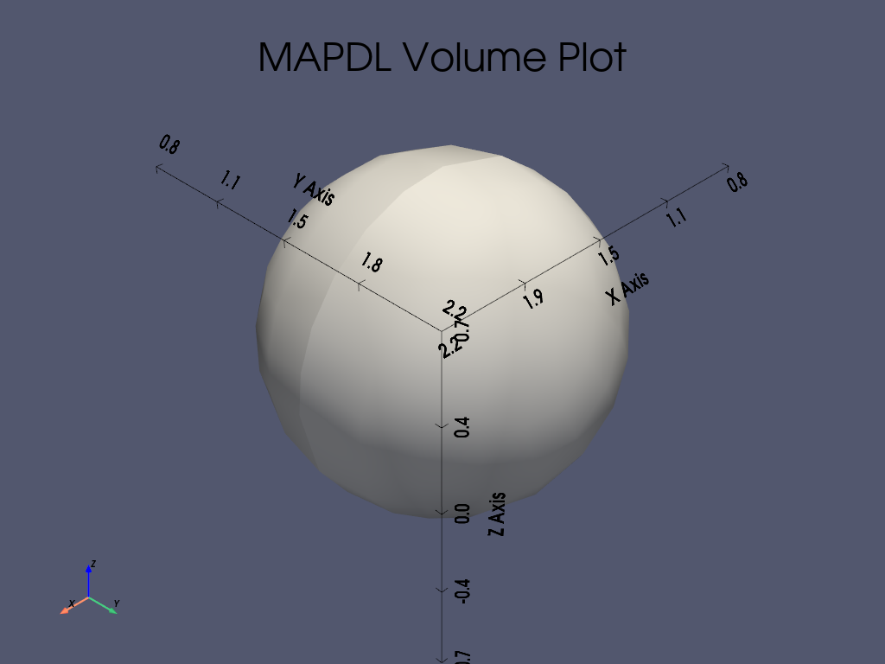
APDL Command: TORUS#
创建环形体积。 (toroidal /tɔ:’rɔidəl/)
此示例创建了一个内小半径为 1、中间半径为 2、大半径为 5 的环面。数值 0 和 180 定义了环的起始角和终止角。
mapdl.clear()
mapdl.prep7()
vnum = mapdl.torus(rad1=5, rad2=1, rad3=2, theta1=0, theta2=180)
mapdl.vplot(show_lines=False, show_bounds=True, smooth_shading=False)
- 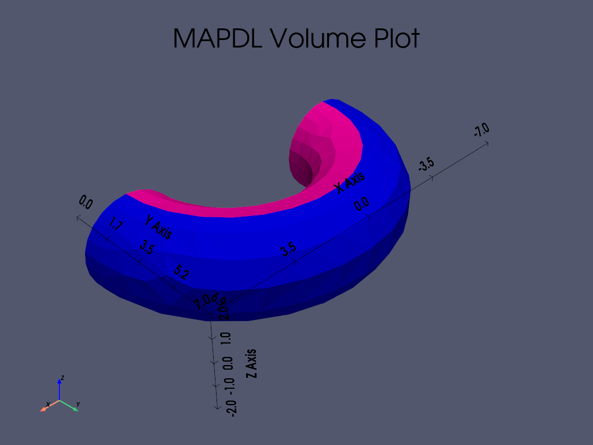
- 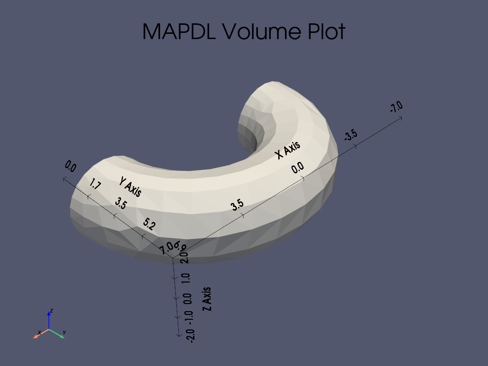
Stop mapdl#
mapdl.exit()
Total running time of the script: (0 minutes 20.577 seconds)